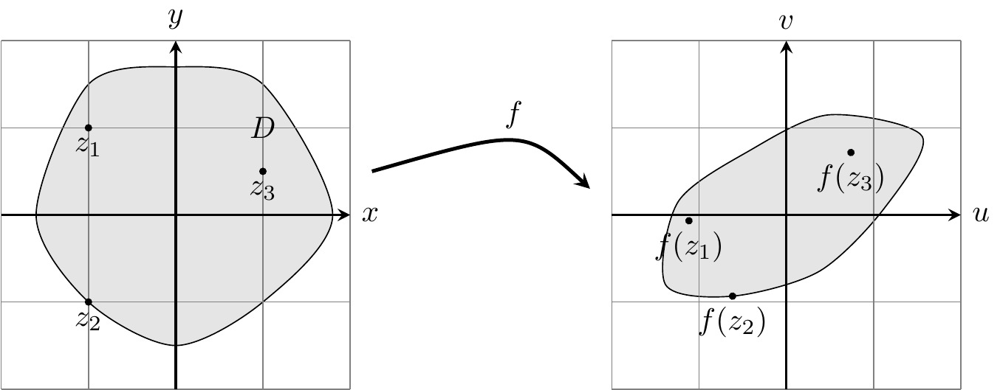
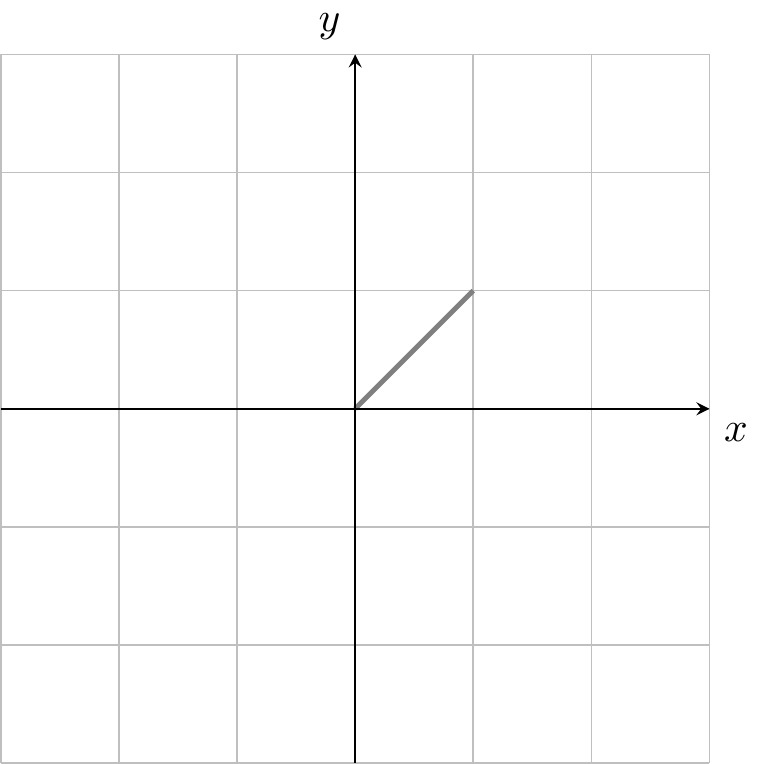
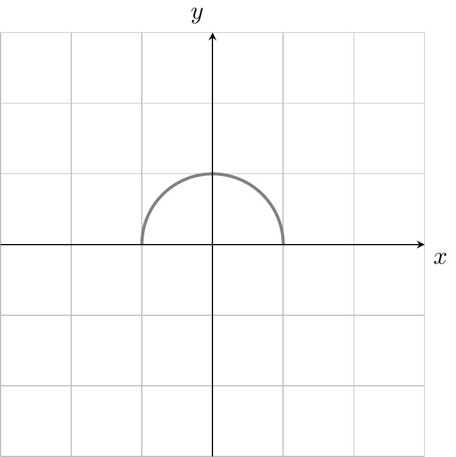
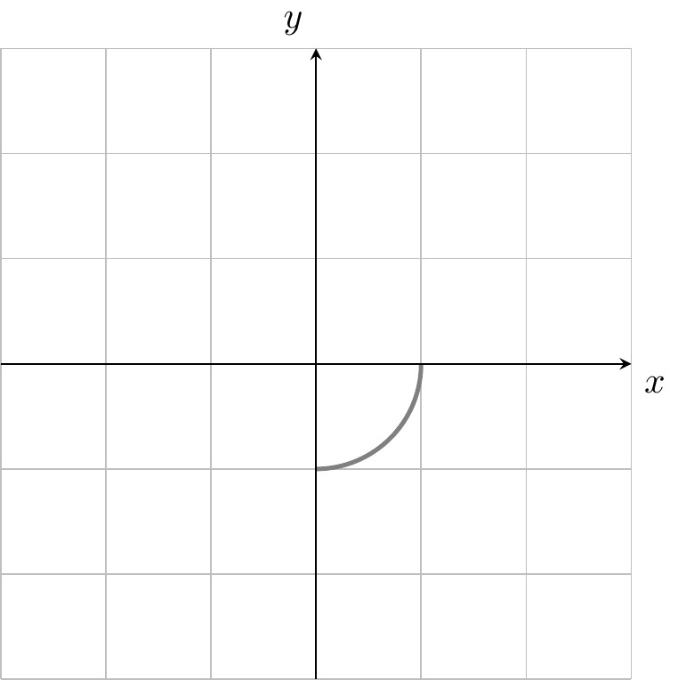
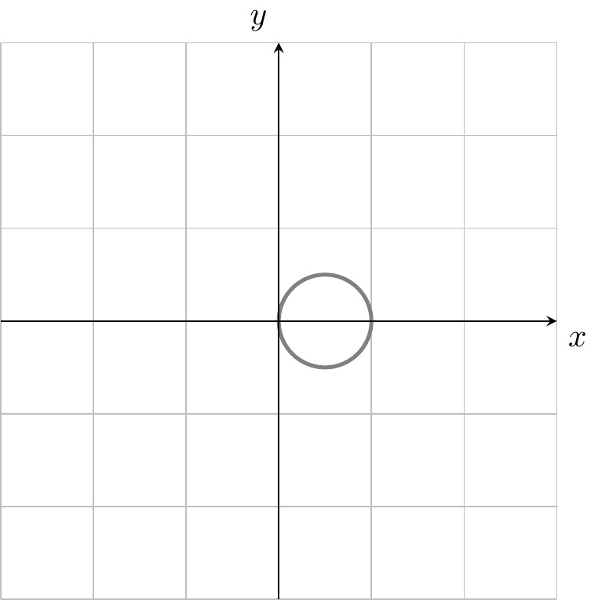
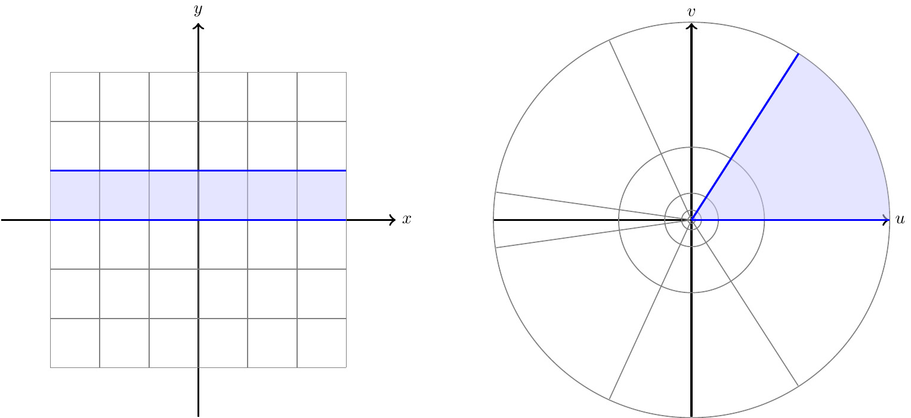

We can visualize complex functions as in Figure 2.1. In practice, most complex functions are defined by a formula.


Definition 2.1 A complex function \(f\colon D\to\C\) is a map with domain of definition \(D\subset\C\) and codomain the complex plane. Thus, \(f\) assigns to each \(z=x+iy\in D\) in the domain a complex number\[f(z)=u(z)+iv(z).\]We call \(u\colon D\to\R\) the real part and \(v\colon D\to\R\) the imaginary part of the complex function \(f.\)
We can visualize complex functions as in Figure 2.1. In practice, most complex functions are defined by a formula.
Example 2.1
Let \(a,b\in\C\) be fixed complex numbers. Then \(f(z)=az+b\) is a complex function with domain \(D=\C,\) written \(f\colon\C\to\C.\) For instance, \[f(z)=iz, f(z)=2z, f(z)=z+3.\]
Example 2.2
A polynomial is a complex function \(f\colon \C\to\C\) of the form \[f(z)=a_nz^n+a_{n-1}z^{n-1}+\ldots+a_1z+a_0, \tag{2.1}\] with complex coefficients \(a_n,\ldots, a_0\in\C\) and with domain \(D=\C.\)
More generally, a rational function is a complex function for which there are polynomials \(f,g\) with \(g\neq0\) so that\[h(z)=\frac{f(z)}{g(z)}. \tag{2.2}\]
The domain of \(h\) is \(D=\{z\in\C\mid g(z)\neq0\}.\) However, if the polynomials \(f,g\) have a common factor, we can cancel that factor in the fraction Equation 2.2 and regard \(h\) as a complex function on a larger domain.
For example, \(h(z)=\frac{z+1}{z^2-1}\) has domain \(\C\setminus\{\pm1\},\) but we can rewrite the fraction as \(h(z)=\frac{1}{z-1},\) which makes sense on the extended domain \(\C\setminus\{+1\}.\)
We have already met several complex functions in the previous section.
Example 2.3
The exponential function \(\exp\colon\C\to\C\) is defined by \(\exp(z)=e^z=e^x(\cos(y)+i\sin(y))\) and has domain \(D=\C.\)
Example 2.4
The sine function \(\sin\colon\C\to\C\) and the cosine function \(\cos\colon\C\to\C\) are the complex functions defined by \[\cos(z)=\frac{e^{iz}+e^{-iz}}{2}, \qquad \sin(z)=\frac{e^{iz}-e^{-iz}}{2i}. \tag{2.3}\] (See the corresponding exercise in Section 1.1)
Definition 2.2 We define the following subsets of the complex plane: \[\begin{align*} \C^\t&=\{z\in\C\mid z\neq0\} &&\text{\textbf{punctured plane}}\\ \C^-&=\C\setminus\{x\in\R\mid x\leqslant 0\} &&\text{\textbf{slit plane}}\\ S&=\{z=x+iy\mid y\in(-\pi,\pi)\} &&\text{\textbf{principal strip}}\\ \H&=\{z=x+iy\mid y>0\}&&\text{\textbf{upper half-plane}} \end{align*}\]
Example 2.5
The principal branch of the complex logarithm is the complex function
\[\log\colon \C^-\longra S\subset\C\]defined by\[\log(w)=\log(r)+i\th\iff w=re^{i\th}, r>0, \th\in(-\pi,\pi). \tag{2.4}\]
Here \(\log(r)\) denotes the (real) logarithm from MA1005 Calculus. In other words, the real part of \(\log(w)\) is the logarithm of the modulus \(r=|w|\) and the imaginary part of \(\log(w)\) is the argument function \(\arg(w)\) from Definition 1.3.
To evaluate Equation 2.4, write \(w\) in polar coordinates, ensuring that \(\th\in(-\pi,\pi).\) For example, \(i=e^{i\pi/2}\) and so \(\log(i)=\log(1)+i\frac{\pi}{2}=i\frac{\pi}{2}.\)
Proposition 2.1
The exponential function is surjective onto \(\C^\t.\)
We have \[\exp(\log(w))=w\ (\forall w\in\C^-) \tag{2.5}\] \[\log(\exp(z))=z\ \; (\forall z\in S). \tag{2.6}\]
Hence the restriction \(\exp|_S\) of the exponential to the principal strip is a bijection \(\exp|_S\colon S\to\C^-\) onto the slit plane, with inverse \(\log(w).\)
Proof.
Recall from MA1005 Calculus that \(e^x\neq0\) for all \(x\in\R.\) As \(|\exp(x+iy)|=e^x\neq0,\) the image of \(\exp\) is contained in \(\C^\t.\) For proving that \(\exp\) is onto \(\C^\t,\) recall that every non-zero number can be written in polar form \(w=re^{i\th},\) \(\th\in(-\pi,\pi].\) Then \(\exp(z)=w\) for \(z=\log(r)+i\th.\)
Equations Equation 2.5, Equation 2.6 are straightforward to verify using Equation 2.4.
Since the graph \(\Ga(f)=\{(z,w)\in D\t\C\mid f(z)=w\}\) of a complex function is a subset of four-dimensional space, we cannot visualize complex functions as easily as real functions. We will now discuss some alternatives.
A useful way to picture a complex function is to sketch its values on a grid \(G.\) The image grid \(f(G)\) is a distorted version of the original grid which can be navigated easily using the grid lines. For example, to determine \(f(1+2i),\) take one step in \(x\)-direction and two steps in \(y\)-direction on the distorted grid. Formally, let \(G=\{z=x+iy\in\C\mid x\in\Z\text{ or }y\in\Z\}\) be the unit grid and define the image grid as (see Figure 2.3)
\[f(G)=\{w=u+iv\in\C\mid\exists z\in G: f(z)=w\}.\]
In practice, the image grid can often be described by finding a familiar equation that all of its members \(u+iv\) satisfy. When this is not possible, a computer will help sketching an approximate image grid.
Example 2.6
Consider \(f(z)=z^2.\) Then \[u=x^2-y^2,\qquad v=2xy. \tag{2.7}\] To determine \(f(G),\) first fix \(x=\pm1,\pm2,\pm3,\ldots\) to be a non-zero integer. Using Equation 2.7 we find \(u=\frac{-1}{4x^2}v^2+x^2.\) This is a downward parabola in the \((u,v)\)-plane rotated by 90 degrees with vertex at \((u,v)=(x^2,0)=(1,0),(4,0),(9,0),\ldots.\) Similarly, if we fix \(y\) to be a non-zero integer, then \(u=\frac{1}{4y^2}v^2-y^2\) is an upward parabola in the \((u,v)\)-plane rotated by 90 degrees. For \(x=0,\) we get \((u,v)=(-y^2,0)\) which parameterizes the negative \(u\)-axis. Similarly, for \(y=0\) we get the positive \(u\)-axis. All this is summarized in Figure 2.4.
Example 2.7
Consider \(f(z)=1/z.\) Then \[u=\frac{x}{x^2+y^2},\qquad v=\frac{-y}{x^2+y^2}. \tag{2.8}\] Fixing \(x=\pm1,\pm2,\ldots,\) we have \(\bigl(u-\frac{1}{2x}\bigr)^2+v^2=\frac{1}{4x^2}\) (verify by substituting Equation 2.8 into this equation). This is a circle of radius \(\frac{1}{2x}\) and with center \((u,v)=(\frac{1}{2x},0).\) For \(x=0,\) equations Equation 2.8 become \((u,v)=(0,-1/y)\) which parameterizes the \(v\)-axis. Similarly, for \(0\neq y\in\Z\) we find \(u^2+\bigl(v+\frac{1}{2y}\bigr)^2=\frac{1}{4y^2}\) and for \(y=0\) we obtain a parametrization of the \(u\)-axis. This is summarized in Figure 2.5 (and on the title page).
The previous example can be generalized.
Example 2.8
Rational functions Equation 2.2 with \(f(z)=az+b\) and \(g(z)=cz+d\) affine linear, where \(a,b,c,d\in\C,\) are Möbius transformations. Thus
\[f(z)=\frac{az+b}{cz+d}\]
with domain \(D=\C\setminus\{-d/c\}\) if \(c\neq0\) and domain \(D=\C\) if \(c=0.\) To exclude constant functions, we also assume that \(ad-bc\neq0.\)
We represent each unit complex number \(e^{i\th}\) by a color on the color wheel. The modulus \(r\) of an arbitrary complex number \(re^{i\th}\) will be represented by the lightness of the color. This assigns a unique color to each complex number, see Figure 2.6. Pure white is never used and would correspond to infinity. Pure black corresponds to the origin.
This is less useful for calculations by hand but generates artistic images using a computer.
This can be used for visualizing complex functions. Draw each point \(z\) in the domain of \(w=f(z)\) using the color for \(w.\)
Another approach is to plot the 3-dimensional graph of any of the following real-valued functions \(D\to \R\) \[u, v, |f|=\sqrt{u^2+v^2}.\]
Again, the missing information can be color-coded (see Figure 2.8).
Describe the image set of the complex function \(f(z)=\frac{1+z}{1-z}\) with domain \(D=\C\setminus\{1\}.\) In other words, determine the set of all \(w\in\C\) for which \(w=\frac{1+z}{1-z}\) has a solution \(z\in D.\)
If \(w\neq-1,\) the equation \(w=\frac{1+z}{1-z}\) can be rearranged as \[z=\frac{w-1}{w+1}.\]
Hence \(\C\setminus\{-1\}\) is contained in the image of \(f.\) Also, \(-1\) is not in the image of \(f\) since \(-1=\frac{1+z}{1-z}\) would imply \(z-1=1+z,\) so \(-1=1,\) which is impossible.
Sketch the following curves \(z(t)\) in the complex plane, where \(t\) is a real parameter.
is a straight line from the origin to \(1+i.\)

Thinking in polar coordinates, this the upper semicircle from \(+1\) to \(-1.\)

We have \(z(t)=\cos(-t)+i\sin(-t)=\cos(s)+i\sin(s)\) where \(s=-t\in[-\pi/2,0].\) This is the quarter circle from \(+1\) to \(-i.\)

By plotting the points for \(t=0,\pm1\) and \(t\to\pm\iy,\) we suspect that \(z(t)\) lies entirely on the circle centered at \(1/2.\) We verify this as follows. \[\begin{align*} \left|z(t)-\frac12\right|&=\left|\frac{1-it}{t^2+1}-\frac{1+t^2}{2+2t^2}\right| =\left|\frac{1+(it)^2-2it}{2+2t^2}\right|\\ &=\left|\frac{(1+it)^2}{2+2t^2}\right| =\frac{|1+it|^2}{|2+2t^2|}=\frac{1+t^2}{2+2t^2}=\frac12. \end{align*}\] We know that \(z(0)=1,\) \(\lim_{t\to\pm\iy} z(t)=0,\) \(z(\pm1)=\frac{1\mp i}{2}\) and that the image of \(z\) is a connected subset. Moreover, \(z(t)\neq0\) for all \(t.\) It follows that the image of \(z(t)\) is a circle of radius \(1/2\) centered at \(1/2\) with the origin removed. Note, however, that this parameterization of the circle has an unusual speed.

Let \(\log(z)\) be the principal branch of the logarithm. Compute \[\log(2i), \log(1+i), \log(-3i), \log(5).\]
Recall that the principal branch is defined by \(\log(z)=\log(r)+i\th\) if \(z=re^{i\th},\) where \(r>0,\) \(\th\in(-\pi,\pi).\) We obtain the values \[\quad\log(2)+\frac{i\pi}{2},\quad\log(\sqrt{2})+\frac{i\pi}{4},\quad \log(3)-\frac{i\pi}{2}, \log(5).\]
Describe the following complex functions geometrically. \[f(z)=3z, f(z)=iz, f(z)=\frac{(1+i)}{\sqrt{2}}z\]
\(f(z)=3z\) scales every complex number (though of as a vector in \(\R^2\)) by the factor \(3.\)
\(f(z)=iz\) rotates counterclockwise by 90 degrees.
As \(\frac{1+i}{\sqrt{2}}=e^{i\pi/4}\), the map \(f(z)=\frac{(1+i)}{\sqrt{2}}z\) is a counterclockwise rotation by 45 degrees.
Determine a domain of definition for the following complex functions. \[f(z)=\frac{1}{z}, f(z)=\frac{1+z}{z-1}, f(z)=\frac{z^2-4}{z^2+2z}, f(z)=\frac{1}{\exp(z)}. \]
For \(f(z)=1/z,\) \(D=\C\setminus\{0\}.\)
For \(f(z)=\frac{1+z}{z-1},\) \(D=\C\setminus\{1\}.\)
For \(f(z)=\frac{z^2-4}{z^2+2z},\) it seems at first that both \(z=0,-2\) are problematic, but we can rewrite \(\frac{z^2-4}{z^2+2z}=\frac{z-2}{z}\) since \(z^2-4=(z-2)(z+2).\) We can therefore extend the definition of \(f\) to the domain \(D=\C\setminus\{0\}.\)
For \(f(z)=\frac{1}{\exp(z)},\) \(D=\C\) as \(\exp(z)\neq0\) for all \(z.\) This last fact holds since \(|\exp(z)|=e^x\neq0\) for all \(z=x+iy.\)
Determine the domain of definition for \(f(z)=\frac{1}{\sin(z)}.\)
We need to find the points at which \(\sin(z) = 0\). Using the equality \[\sin(z)= \frac{e^{iz} - e^{-iz}}{2i},\] we need to find the points \(z \in \C\) where \(e^{iz} = e^{-iz}\), equivalently, where \(e^{2iz} = 1\). Writing \(z = x+iy\), we find that \(y = 0\), since \[|e^{2iz}| = e^{-2y} = 1\] and \(x = k\pi\) since \(2x = 0 + 2k\pi\), \(k \in \Z\).
The domain of \(1/\sin(z)\) is therefore \(D = \C \setminus\{k\pi: i \in \Z\}\).
Find all solutions to the following equations:
As \(-1=e^{\pi i},\) the equation \(e^z=-1\) implies \(e^{z-\pi i}=1,\) hence the set of solutions is \(\pi i+2\pi i\Z.\)
Recall that \(\sin(z)=\frac{1}{2 i}(e^{iz}-e^{-iz}).\) Writing \(q=e^{iz},\) the equation \(\sin(z)=-i\) becomes \(q-q^{-1}=2.\) This leads to the quadratic equation \(q^2-2q-1\) which has the roots \(q_\pm=1\pm\sqrt{2}.\) Hence \(\sin(z)=-i\iff\) \(e^{iz}=q_+\) or \(e^{iz}=q_-.\) The first equation is equivalent to \(iz\in\log(1+\sqrt{2})+2\pi i\Z\) and by writing \(q_-=(\sqrt{2}-1)e^{\pi i}\) we find that the second equation is equivalent to \(iz\in\log(\sqrt{2}-1)+\pi i+2\pi i\Z.\) Summing up, the set of solutions is \[\{-i\log(1+\sqrt{2})+2\pi k\mid k\in\Z\}\cup\{-i\log(\sqrt{2}-1)+\pi+2\pi k\mid k\in\Z\}.\]
Prove that the composition \(f\circ f'\) of two Möbius transformations is again a Möbius transformation. If we associate to \(f, f'\) the matrices \[A=\begin{pmatrix} a&b\\ c&d \end{pmatrix}, A'=\begin{pmatrix} \alpha &\beta\\ \gamma& \delta \end{pmatrix} \in \M_{2\times 2}(\C),\]
show that \(f\circ f'\) is associated to the matrix product \(AA'.\)
Let \(f(z) = \frac{az + b}{cz + d}\) and \(g(z) = \frac{\alpha z + \beta}{\gamma + \delta}\) be Möbius transformations. Then, \[(f \circ g)(z) =\frac{ag(z) + b}{c g(z) + d}\]. Using the definition of \(g(z)\), this expands to \[\frac{a\alpha z + a \beta + b \gamma z + b \delta}{\gamma z + \delta} \cdot \frac{\gamma z + \delta}{c \alpha z + c \beta + d\gamma z + d \delta}.\] We consequently have, \[f(g(z) = \frac{(a \alpha + b \gamma)z + (a \beta + b \delta)}{(c\alpha + d \gamma) z + (c \beta + d\delta)}.\]
One can verify explicitly that \(((a \alpha + b \gamma)(c \beta + d\delta)) -((a \beta + b \delta)(c\alpha + d \delta)) \ne 0\), however, this is neatly tackled by the second part of the question, since the product of two invertible matrices is again an invertible matrix.
Notice that, \[AA' = \begin{pmatrix} a\alpha + b \gamma & a \beta + b \delta \\ c \alpha + d \gamma & c \beta + d \delta \end{pmatrix}\] is precisley the matrix associated to \(f \circ g\).
Draw the image grid for \(\exp\colon\C\to\C^\t.\)

{kind=link}
{kind=link}
{kind=link}